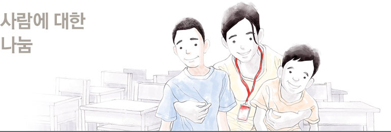
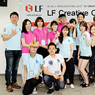
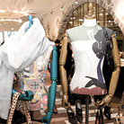

사회공헌
문화, 예술, 환경의 경계를 넘나드는 더 큰 나눔의 실천LF가 정의하는 나눔은
사람에 대한, 사회와 문화에 대한,
더 나아가서 자연에 대한 사랑을
폭넓게 아우르고 있습니다.
앞으로도 지속가능한 공헌 활동을
다양하게 전개해 나갈 것을
약속드립니다.


- LF CREATIVE FESTIVAL
- 매년 진행되고 있는 LF 대학생 마케팅/디자인 공모전인 LF CREATIVE FESTIVAL은
‘LOVE your FUTURE’라는 메인 슬로건 하에 전국 대학생 대상으로 아이디어를 공모하고 있습니다.
LF 임직원이 직접 대학에 방문하는 공모전 설명회를 통해 대학생들과 소통하고 있습니다.
기존의 일반 공모전과는 다르게, 선발된 학생들이 본선 프레젠테이션 이후에도 LF 임직원들과의
캠프, 팀 별 해외 탐방 및 현지 미션 진행, 탐방 결과 공유회 등의 다양한 프로그램에 참여하게 됩니다.
단순한 공모 작품 선발 및 시상을 넘어 젊은 대학생들과 LF가 장기적으로 소통할 수 있는 장이
될 것으로 기대되고 있습니다.
http://lfcf.co.kr/
- 드림장학회
- 실업 가정의 유망한 대학생에게 꿈과 포부를 펼칠 수 있도록 희망을 주고자 하는 자발적 기부 활동
모임. 드림장학회는 꿈을 의미하는 영어 단어 ‘드림(Dream)’과 누군가를 위해 어떤 행동을 하는 것을
이르는 우리말 ‘드림’ 두 가지 의미를 담고 있으며, LF의 임직원과 경영인 FA 100여 명이 참가하고
있습니다. 2009년 9월부터 시작해 2013년까지 세 번째 결실을 맺어 참가자들이 매월 일정 금액을
적립해 모은 후원금을 2011년부터 ‘미래의 동반자재단’을 통해 장학금의 형태로 기부하고 있습니다.

- 채리티 프로젝트
- 닥스 액세서리는 결손가정 자녀들의 가족 기능 및 사회성을 향상시키기 위해서 2차례의 프로젝트를
진행하였습니다. 1차 채리티 프로젝트는 선정된 스타들을 모티브로 특별 기획된 ‘스타백’을 판매하고,
2차는 한국을 대표하는 사진작가 김중만과 함께 기부 캠페인을 공동을 진행하였습니다. 판매
수익금의 일부를 스타와 참여한 아티스트의 이름으로 결손가정 자녀들을 위한 사업에 기부하는
지속적인 자선 프로젝트로 전개하고 있습니다. 특히 배우 김하늘과 전개한 ‘하늘백’은 출시 한 달만에
3천 개 판매고를 올리며 많은 고객들과 함께 사랑의 마음을 선물하는 기부의 참 의미를 나눌 수 있는
기회가 되었습니다. 닥스 액세서리는 결손가정 자녀들의 가족 기능 및 사회성을 향상시키는 활동에
지속적인 지지를 보낼 예정입니다.

- 굿 바이(Good buy) 프로젝트
- TNGT는 국제구호개발NGO인 굿 네이버스와 제휴해 팝업 스토어를 오픈하였습니다.
해당 기간 동안 구매 제품 1개 당 2,000원이 아프리카의 불우 아동을 위한 기부 프로그램에
자동 기부되어 고객들의 착한 소비를 장려했습니다.

- 워터네이션
- 국내 빈곤 아동을 후원하는 워터네이션은 굿네이버스에서 후원하는 10명의 어린이들이 헌터
오리지널 레인부츠에 물방울 프린트를 모티브로 한 그림을 그려 라움에 전시하였으며, 전시 기간
동안 판매되는 헌터 전체 판매 수익금의 일부를 굿네이버스에 기부하였습니다. 앞으로도 헌터는
국내 저소득 가정 아동을 지속적으로 후원할 예정입니다.